As seen & heard on


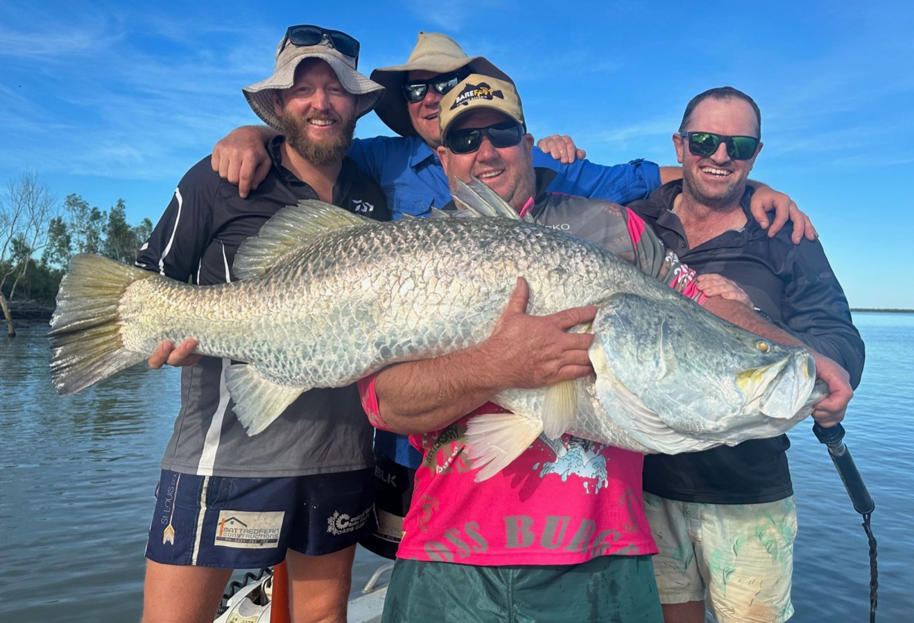
Kakadu NT / -12.66°S, 132.48°E
South & East Alligator Rivers · Barramundi Prime Time · Late Feb – Early June
As seen & heard on
Barra fishing in Darwin heats up as the wet season comes to a close. The humidity drops, the sea breezes come back — and at this prime time of year there's no better place to be than on an extended fishing safari in the Top End. Big numbers of big barra and king threadfin fill the rivers, gorging on the bait pouring off the floodplains as the water recedes.
After a couple of months of steady rain, the monsoon retreats back off Australia's northern coast. As the tens of thousands of square kilometres of flooded floodplain recede, all the baitfish, frogs, crustaceans — and of course the barra — come draining out with it. Fish move up from hundreds of kilometres around to gorge themselves on the bounty being flushed off the plains. Late February through to early June is peak run-off.
"Whatever a good week looks like for you — your first barra, your PB, or a hundred of them — this is the season I'd back."— Watty
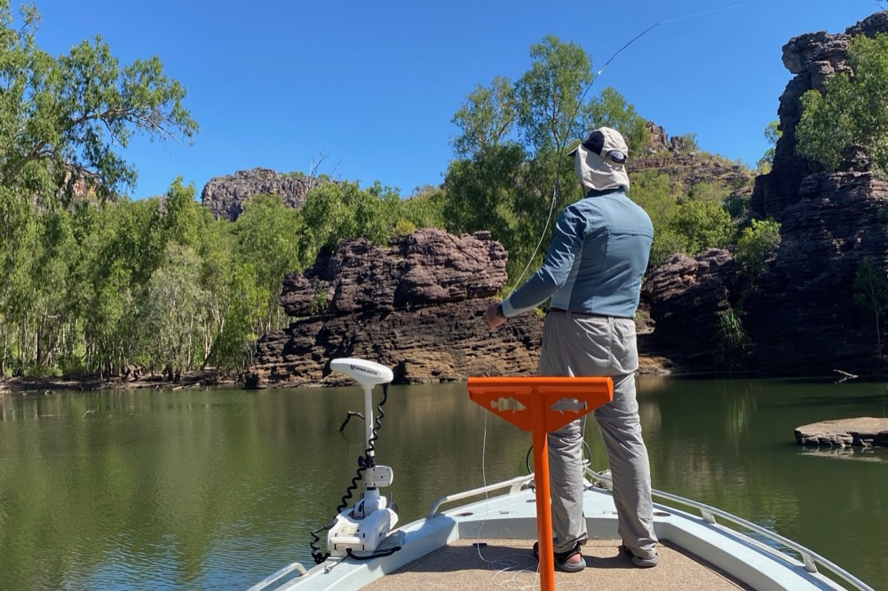

Watch
As the massive floodplains of the Mary, Daly, Finniss and the South and East Alligator rivers subside, millions of baitfish and other barra treats have nowhere to go but downstream — and big hungry barra gather to gorge on the tasty tucker flowing off the plains. Cricket-score catches happen at this time of year, and it's the ideal window to chase the heart-thumping, arm-pumping 100cm-plus barra we call meterys — the holy grail for every barra fisho.
And along with the best barra fishing the Territory has to offer, there are a few sneaky spots to find a tasty golden snapper or jewfish — a change of pace, and something different on the table.
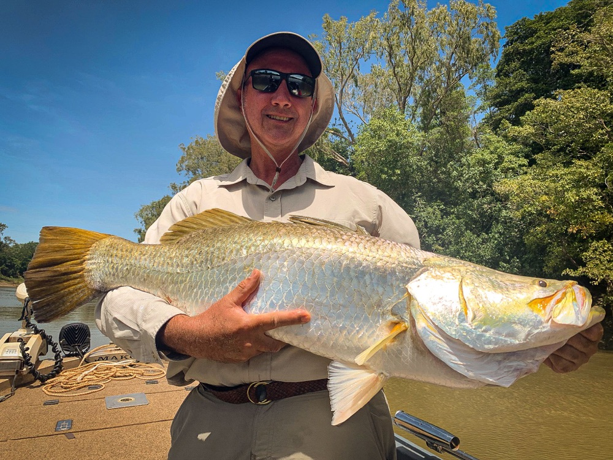
Fishing inside the World-Heritage-listed Kakadu National Park means amazing scenery, calm water and the best barra fishing the country has to offer, as the South and East Alligator systems drain their floodplains.
And you're away from the crowds — only three guided fishing operators hold permits to fish inside Kakadu National Park, and Barefoot is one of them.

Your guide
No blow-in guides who don't know the area — you fish with me, every single day. It started on a farm in western Victoria around 1983, with dad and a few redfin, and it never wore off. I've been guiding the Top End since 2011.
I'm an IGFA captain & guide and one of three operators permitted inside Kakadu. Fishing should be fun — snag, tangle or missed cast, you're covered, whether it's your first barra or your thousandth.

Out here with us
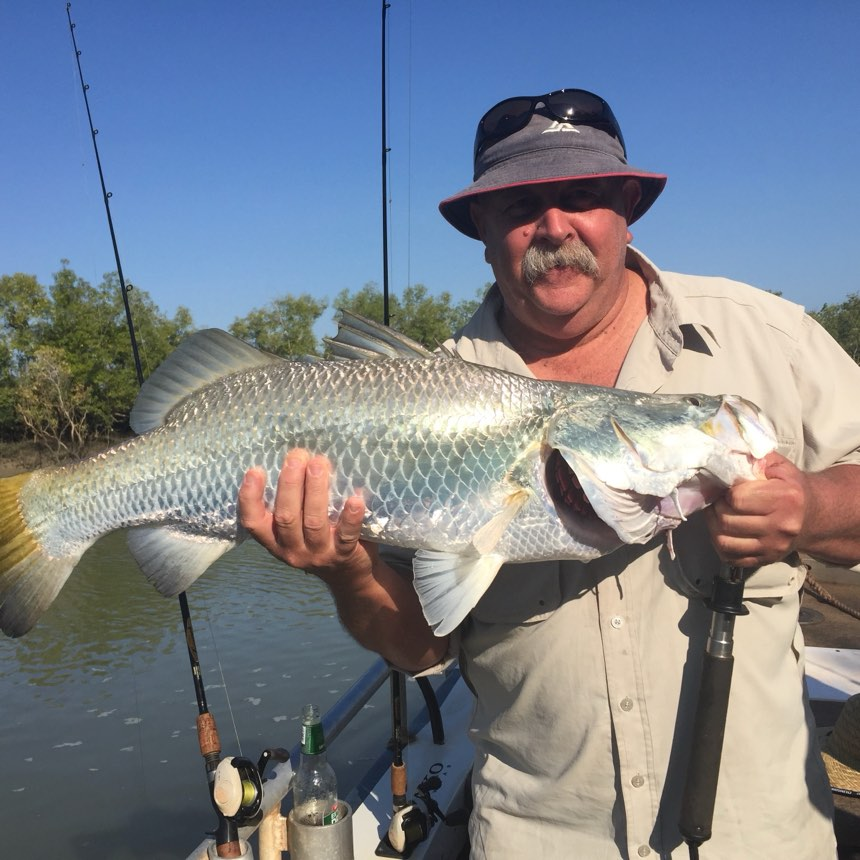
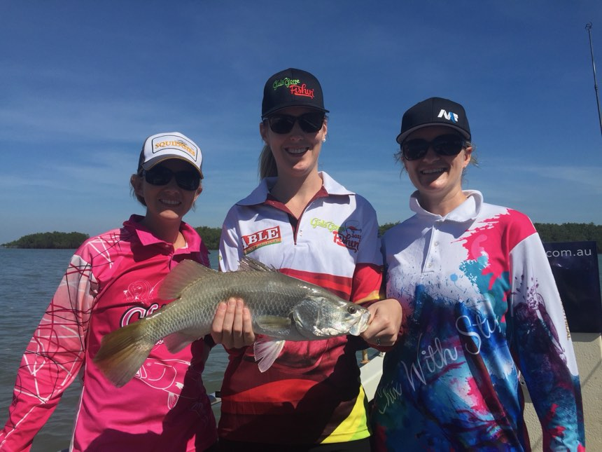
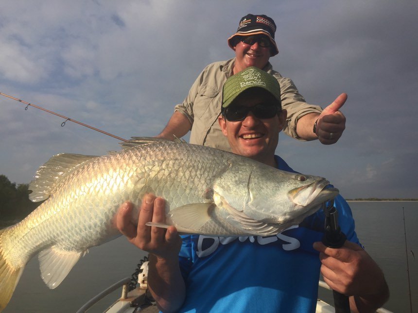
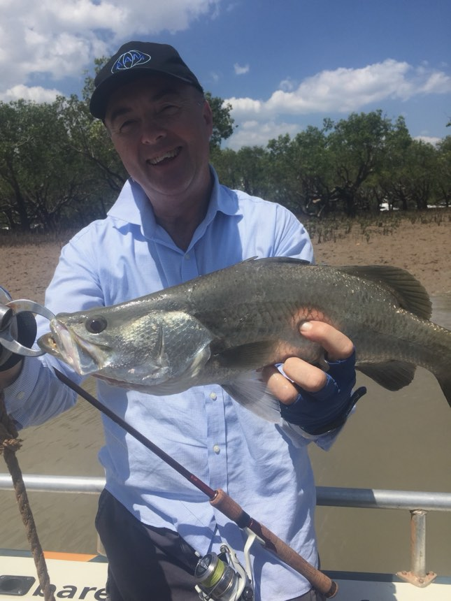
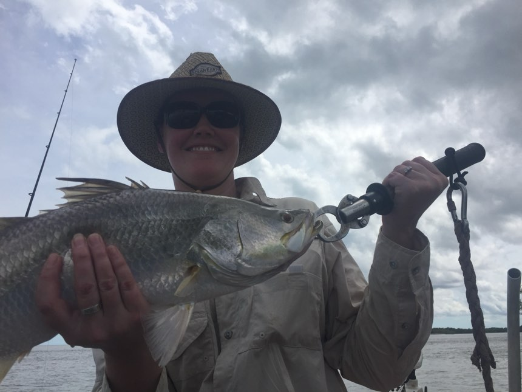
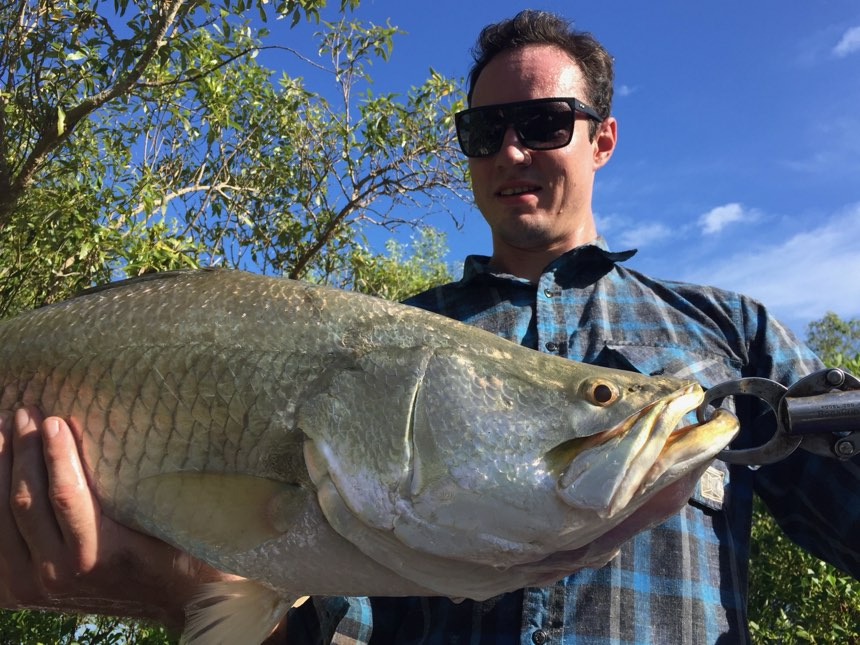
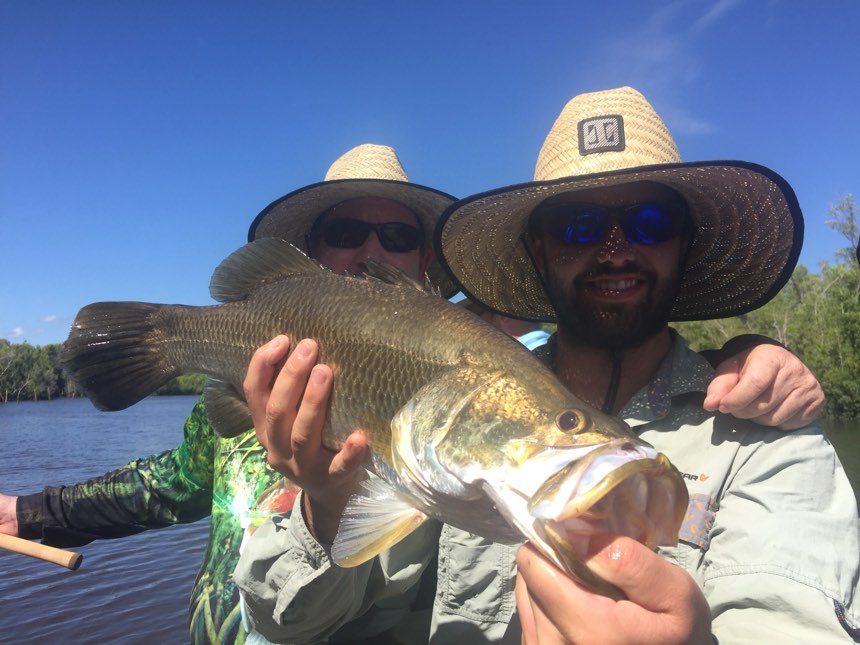
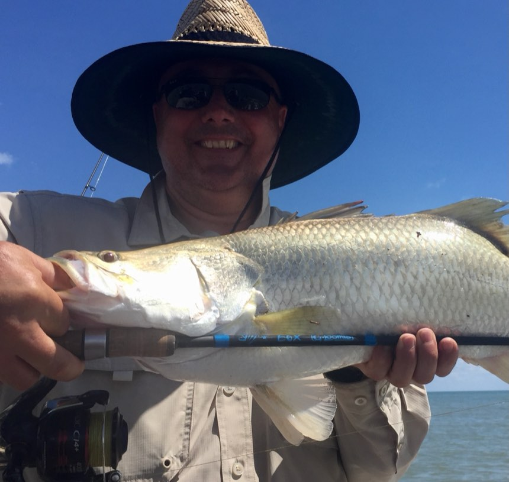
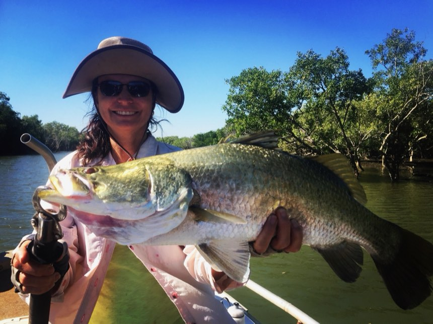
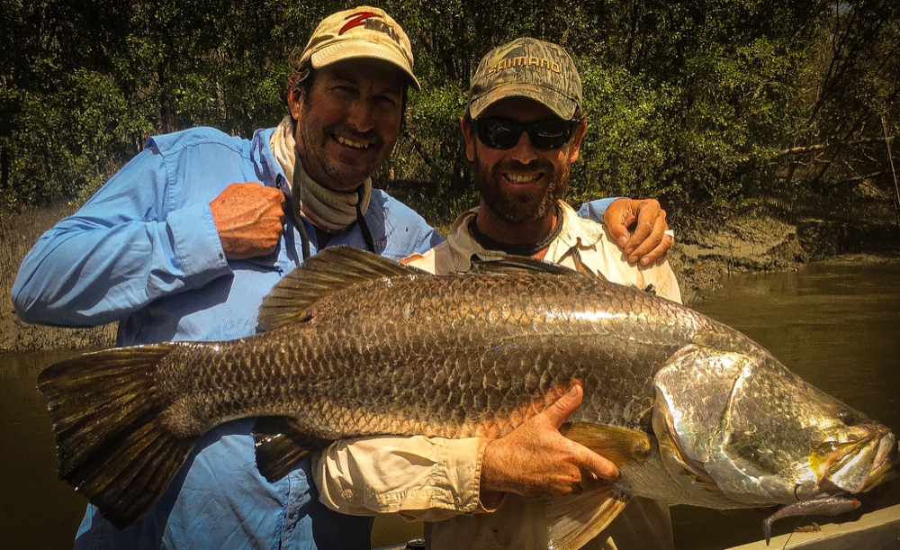
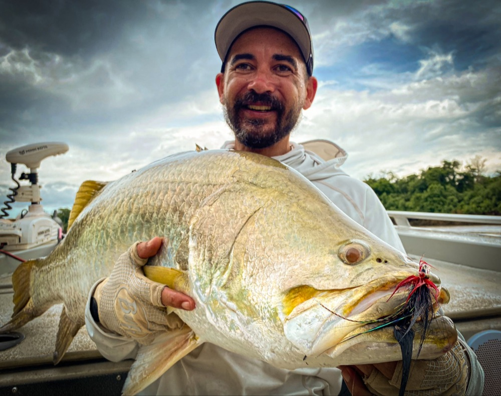
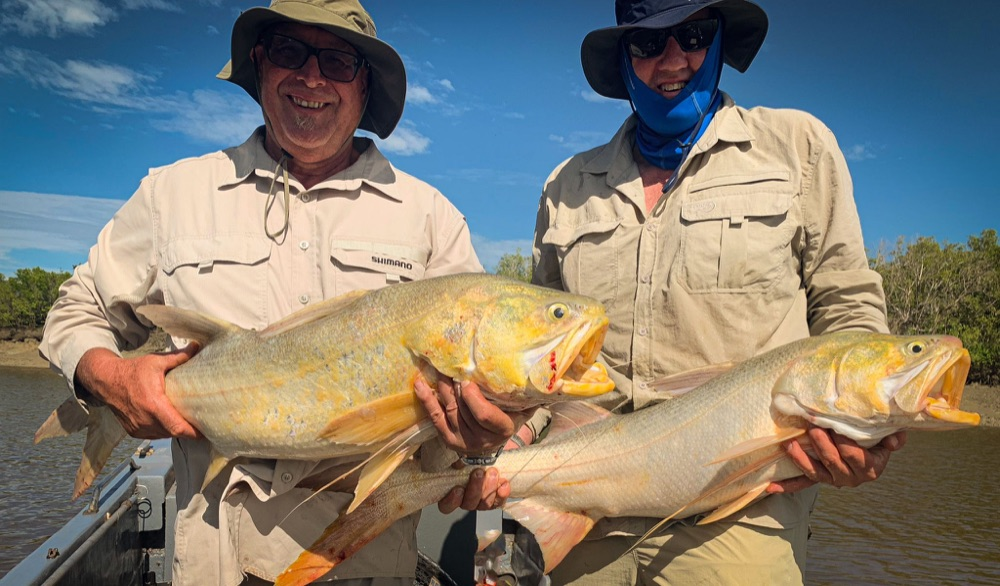

Word of mouth
"Everything you look for in a guide — wise, calm, encouraging and entertaining."
— TripAdvisor review
"We can honestly say we learnt a lot and enjoyed every minute."
— TripAdvisor review · Shady Camp, Mary River
"His patience and coaching enabled her to land her first barra."
— TripAdvisor review
The dry-season and build-up run at Bynoe & Dundee fires from late August — sight-cast barra in clean shallow water, plus the big bluewater species, in the same trip.
Further afield, Watty is also a director of — and very active in — Angling Adventures, hosting trips to the best fishing spots around Australia and the world. If they haven't been there, they won't send you there.
Getting around
No taxis, no waiting on a transfer, no being stuck out bush without wheels. The Barefoot courtesy ute — a dual-cab four-wheel-drive Isuzu D-Max with a lockable canopy — is left at Darwin airport for you. Pick it up when you land and it's yours for the whole trip.
Drive out the night before and wake up on the water, or head out on the morning of day one and meet Watty at the ramp. Whatever suits your flights.
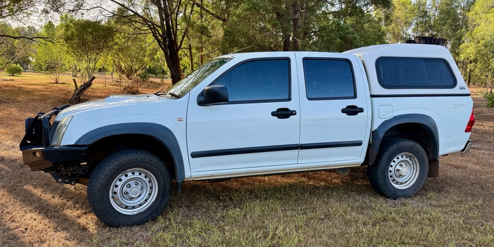

Price guide
Every Barefoot trip is private — just you and your crew, never mixed in with strangers. Prices are per angler in AUD, and the more of you aboard, the better the per-head rate (you're sharing the one boat and guide). Boat-only from $2,485 pp · fully catered from $3,925 pp.
Everything sorted — just bring yourself.
| Nights | Group of 4 | Group of 3 | Group of 2 |
|---|---|---|---|
| 3 days fishing | |||
| 3 nights | $3,925 | $4,352 | $4,842 |
| 4 nights | $3,925 | $4,817 | $5,307 |
| 4 days fishing | |||
| 4 nights | $5,078 | $5,648 | $6,301 |
| 5 nights | $5,543 | $6,113 | $6,766 |
| 5 days fishing | |||
| 5 nights | $6,231 | $6,943 | $7,760 |
| 6 nights | $6,696 | $7,408 | $8,225 |
| 6 days fishing | |||
| 6 nights | $7,385 | $8,239 | $9,219 |
| 7 nights | $7,850 | $8,704 | $9,684 |
| 7 days fishing | |||
| 7 nights | $8,538 | $9,535 | $10,678 |
| 8 nights | $9,003 | $10,000 | $11,143 |
You arrange your own meals & accommodation — with local guidance on the good options.
| Nights | Group of 4 | Group of 3 | Group of 2 |
|---|---|---|---|
| 3 days fishing | |||
| 3 nights | $2,485 | $2,912 | $3,402 |
| 4 nights | $2,950 | $3,377 | $3,867 |
| 4 days fishing | |||
| 4 nights | $3,158 | $3,728 | $4,381 |
| 5 nights | $3,623 | $4,193 | $4,846 |
| 5 days fishing Most booked | |||
| 5 nights | $3,831 | $4,543 | $5,360 |
| 6 nights | $4,296 | $5,008 | $5,825 |
| 6 days fishing | |||
| 6 nights | $4,505 | $5,359 | $6,339 |
| 7 nights | $4,970 | $5,824 | $6,804 |
| 7 days fishing | |||
| 7 nights | $5,178 | $6,175 | $7,318 |
| 8 nights | $5,643 | $6,640 | $7,783 |
Solo (1-angler) private trips available on request. Alcoholic & soft drinks not included.

Good questions
From about late February through to early June, when the wet-season floodwaters recede off the floodplains and the barra pour into the rivers and creeks to feed. It's the peak barra season.
Yes. It's the prime time for both numbers and size, as the bigger fish move into the river systems to feed on the bait being flushed off the floodplains. Whether a good week means your first barra, your PB, or a hundred of them, this is the season with the best odds of it.
Absolutely. Plenty of first-timers land their PB on a Barefoot trip. With the right gear and a bit of coaching you'll be hitting an empty beer can on the lawn in no time — and I'm in the boat with you all day, every day.
None — all the quality gear's provided. For the curious: a baitcasting outfit (4–6kg rod, low-profile reel, 30–50lb braid) for bigger lures and trolling, and a spin outfit (10–17lb rod, 3000–4000 reel, 20–30lb braid) for casting light lures at the edges.
They're here — it's the Top End, and they're part of what makes it wild. We fish from a proper boat, keep hands and feet inside, and follow a few simple rules I'll run you through on day one. Thousands of anglers fish these rivers safely every season.
The run-off is the tail end of the wet, so expect a storm or two roll through — rain rarely hurts the fishing and often fires it up. If conditions are genuinely no good we change the water or the plan. Safety calls are mine, and they're conservative.
Early. We only run trips on the best tides of each month, which limits the season to roughly three weeks of prime dates a year — and those dates often book out up to two years in advance.
Two options: the Full Package covers guiding, all meals, accommodation, use of the Barefoot courtesy ute and all fishing gear. Boat Only covers guiding, the ute and gear while you sort your own meals and beds. Every trip is private — just your group.

Lock in your window
Tell me who's coming and when you can get away, and I'll come back with the best tide windows still open. No obligation — worst case you'll know exactly what a run-off week looks like for your crew.
Out on the water most days — if I don't pick up, text or WhatsApp and I'll get back to you off the water.
Free guide
Everything worth knowing before a run-off safari — the fishing, the gear, the techniques, what's included and what to bring. Free, straight to your inbox.
No spam — just good Top End fishing. Unsubscribe anytime.